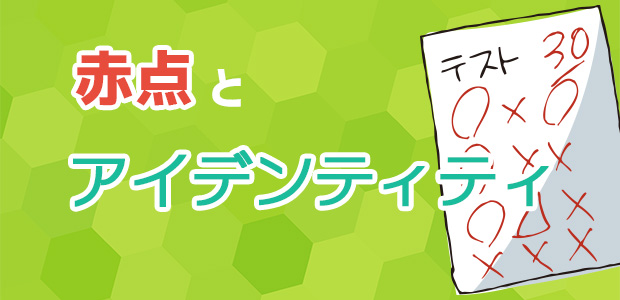

先々週の池村先生の記事（⇒質問にお答えします～赤点ピンチなんですが…～）では「赤点」が取り上げられていましたね。私は元々高校生をメインで教えていたこともあって、このたぐいの質問は何度も受けています。この質問のバリエーションとしては、「受験に使わない科目なのに課題がたくさん出て勉強がまわらない」「部活が忙しすぎて勉強がまわらない」といったものがありますが、根本はすべて同じ。つまるところ、自分が「どうなりたいか」というゴールを自覚できていないところに問題があるわけです。「どうなりたいか」は志望校だけには限りません。職業や性格、ライフスタイルなど様々なものを包含した自分の理想像を指します。ゴールである理想像を自覚できれば、それを達成するため、という基準をすべての活動にあてはめることができます。その基準に従って動くと決めれば、やらなければならないことが「必要かどうか」を判断することができるはずです。
しかし、実はこの理想像、多くの生徒が持っていません。もっと言えば、求めてもいません。それはなぜでしょう？ いろいろな理由があるでしょうが、その一つには、世間に強く根を張っている「現状肯定」の雰囲気があるのかもしれません。「ありのままの自分」「本当の自分」をよいものと見なし、人工的に作り出す理想像を作り物、偽物であると見なすという暗黙の了解があるように思うのです。
大学入試の問題では、この「本当の自分」にまつわる評論が数多く出題されます。一昔前の「自分探し」や「セカイ系小説」などを例にとって、本当の自分なるものがいかにとらえどころのない幻のようなものであるかを説明しているものなのですが、その文章を読むと、これまた多くの生徒が違和感を覚えるようです。違和感と言うよりは反感といったほうがよいかもしれません。「本当の自分」「ありのままの自分」を肯定すれば、自分を変えていくための努力もする必要がなくなるわけです。
「だってしょうがないじゃん。これがおれの性格なんだから」。この言葉も非常によく聞きます。この言葉は性格が普遍のものであることを前提となります。すると、普遍の性格にそぐわない様々な問題はすべて面倒な障害、無駄な障害に過ぎなくなってしまいます。つまり、この問題に対処することは徒労です。しかし、性格を変え、ライフスタイルを変えて理想の自分に近づこうとするのであれば、数々の問題は成長するための材料になります。ここに至って初めて、自信を持って「これはやる必要がある問題。これは必要がない問題」と分類していくことができるのです。
① 今のままでいい。今の自分は変わらない。
② にもかかわらず、面倒な課題が出る。
③ ①なのでやりたくないけど、内申点（受験）のためにやらなければならない。
こう考えてしまうならば、プラスになることは一つもありません。
少し物事を大きく考えて、見方を変えてみましょう。きっとよいことがありますよ。